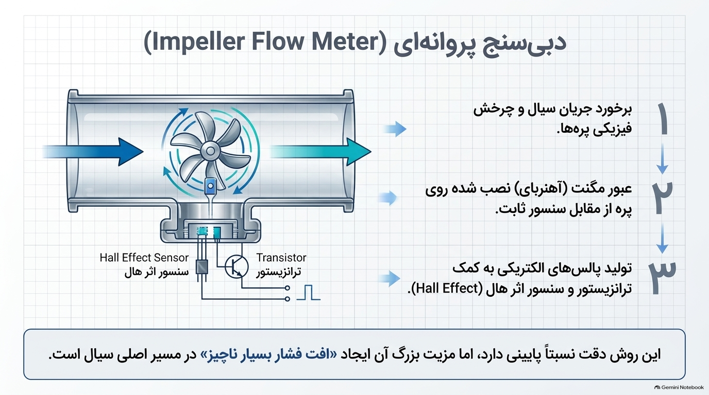
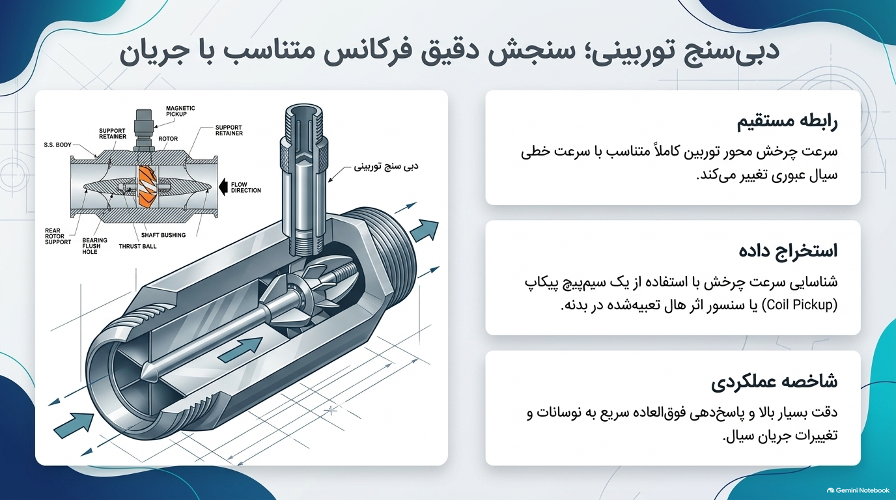

این دو فلومتر مکانیکی، سرعت چرخش یک پروانه را متناسب با سرعت سیال اندازه میگیرند. تفاوت اصلی در اندازه و کاربرد است: ایمپلر کوچک و ارزان برای جریانهای داخلی و وسایل نقلیه، و توربین بزرگ و دقیق برای انتقال نفت و گاز. در هر دو، خوانش با شمارش پالس انجام میشود: هر دور پروانه = یک پالس.
🔹 فلومتر ایمپلر (Impeller Flow Meter)
ایمپلر یک پروانهٔ کوچک پلاستیکی یا فلزی است که مستقیماً در مسیر جریان قرار میگیرد. روی پرهٔ پروانه یک آهنربای کوچک نصب میشود و در بیرون لوله، یک سنسور اثر هال هر بار که آهنربا از مقابلش میگذرد، یک پالس تولید میکند. تعداد پالس در واحد زمان = فرکانس چرخش = دبی.

اسلاید ۶ — فلومتر ایمپلر: آهنربا روی پره + سنسور اثر هال + خروجی پالس دیجیتال
خروجی
پالس دیجیتال (square wave). فرکانس متناسب با دبی. آسان برای میکروکنترلر.
سنسور خوانش
اثر هال (Hall Effect) — غیرتماسی، بدون سایش، تحمل بالا در برابر لرزش و رطوبت.
کاربرد
سوخت خودرو، آبسنج خانگی، دستگاههای تزریق، سیستم آبیاری.
محدوده
۰.۵ تا ۲۰۰ L/min، دقت ±۲–۵٪. ارزان و فشرده.
// شمارش پالس از فلومتر ایمپلر با سنسور اثر هال
const pulsesPerLiter = 450; // ضریب K (از دیتاشیت)
volatile unsigned long pulseCount = 0;
void isr() { pulseCount++; } // وقفه خارجی روی پین ۲
void setup() {
pinMode(2, INPUT_PULLUP);
attachInterrupt(0, isr, FALLING); // هر لبهٔ نزولی = یک پره عبور کرده
Serial.begin(9600);
}
void loop() {
static unsigned long last = 0;
if (millis() - last >= 1000) { // هر ۱ ثانیه
noInterrupts();
unsigned long n = pulseCount; pulseCount = 0;
interrupts();
float liters = (float)n / pulsesPerLiter;
float L_per_min = liters * 60;
Serial.print("Flow = "); Serial.print(L_per_min); Serial.println(" L/min");
last = millis();
}
}
🔹 فلومتر توربین (Turbine Flow Meter)
فلومتر توربین نسخهٔ بزرگتر و دقیقتر ایمپلر است. یک روتور چندپرهٔ دقیق روی بلبرینگهای کماصطکاک درون یک لولهٔ فلزی نصب میشود. بهجای آهنربای کوچک و هال، از یک کوئل پیکآپ (Coil Pickup) استفاده میشود: هر بار که یک پرهٔ فولادی از مقابل کوئل عبور میکند، یک پالس ولتاژ القایی تولید میکند (قانون فارادی). هیچ تغذیهٔ خارجی به کوئل لازم نیست — خود سیگنال از انرژی جنبشی پره گرفته میشود.

اسلاید ۷ — فلومتر توربین: ROTOR، RETAINER، THRUST BALL، SUPPORT و کوئل پیکآپ
خوانش کوئل
تغییر reluctivity مسیر مغناطیسی هنگام عبور پره، ولتاژ القایی در کوئل تولید میکند. بدون تغذیه!
دقت بالا
±۰.۲۵٪ در محدودهٔ کاری. استاندارد بازرگانی برای نفت و گاز طبیعی.
کاربرد
خط انتقال نفت، گاز طبیعی، هیدروکربنهای سبک، اندازهگیری تجاری.
محدودیت
بلبرینگ سایش دارد؛ روانکاری لازم؛ سیال باید تمیز باشد (ذرات بزرگ روتور را خراب میکنند).
نکته تعمیر: فلومتر توربین حساس به روانکاری بلبرینگ است. در سیالات خشک (گاز بدون روانساز)، بلبرینگ زودتر خراب میشود؛ بههمین دلیل نسخههای گازی از بلبرینگهای سرامیکی یا گاز روانکار استفاده میکنند.